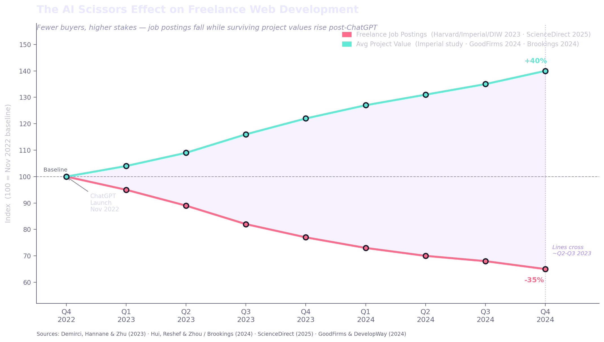

Back in 2022 during the COVID years, or way before that, I started dabbling in programming. One of the things I did was web development and made my own website, learning all the HTML and CSS needed. I forgot about the website until recently when I decided to remake it entirely with AI, because why spend years learning how to forge a hammer when you can describe your house and watch it rise?
Freelance Reset
The rise of AI has significantly impacted the freelance market, particularly in web development. With AI-powered tools, freelancers can now create websites more efficiently and at a lower cost, leading to increased competition and potentially lower rates.
But not just freelancers, normal people and business owners can create their own websites with minimal technical knowledge. The only limitation they have is their imagination.
On November 30, 2022, OpenAI released ChatGPT, the first true consumer-facing LLM. In mere two months, more than 100 million users had signed up. This kickstarted the AI arms race and billions were poured into AI startups. In just 3 years, AI went from hallucinations to developing entire apps, editing photos, and generating music and video. "Vibe coding" became a reality, and that is what I did with my new website. Through the process of prompt engineering, you simply describe what you want to build, and within minutes, the AI turns your vision into a reality.
This "democratization" of web development has opened access to web design and development for a wider audience. On Fiverr.com you can find freelancers who will make a website for you. You can pay $100 for a 3 page basic website, $320 for a 5 page business website, and over $530 for a fully functional ecommerce website. The alternative is now a serious contender: subscribing to a Claude or Gemini Max plan for a month. For the cost of a nice dinner, you're hiring a on-call developer that builds for you any time and any place, and you can easily direct its path. I guided Gemini to build this entire website all in less than a day: 700 lines of CSS, 150 lines of Javascript, and hundreds more in HTML, all without writing a single line of code. All I did was review the code and make adjustments as needed.

*Data collected and graph built by Claude Sonnet 4.6
However, this doesn't necessarily mean that all web development jobs are at risk. While AI can handle many aspects of web development, there are still certain tasks that require human creativity and problem-solving skills. For example, designing a unique user interface or creating custom animations may still require a human touch to perfection. AI tools heavily democratized the ability to do such tasks where the main effort will be directed towards prompt engineering and reviewing the results. A random 12 year old can now replicate the same website as a multi-million dollar company.
The Next Years
As AI continues to evolve, we can expect to see even more advanced tools that will further automate web development tasks. This could lead to a significant reduction in the demand for freelance web developers, as businesses may opt for AI-powered solutions instead. However, it is also possible that new opportunities will arise for freelancers who can adapt and specialize in areas that AI cannot easily replicate.
AI has a significant impact on the freelance web development market, but it also presents new opportunities for those who can leverage these tools effectively. Web development isn't entirely dead for freelancers, the frontend of a website can easily be replicated, reducing the need for a $100 basic site, but the backend may still require human expertise. But it may only be a matter of time before that changes as hundreds of billions are poured into the AI arms race.
Web development isn't dead, but the core has certainly evolved significantly. All of this progress in AI: from a basic chatbot to a fully autonomous web developer, all accelerated in just a few short years. These next few years, or even quarters, will be a transformative period for not just web development, but the entire industry as AI goes from being our tool to becoming a colleague in white-collar tasks.